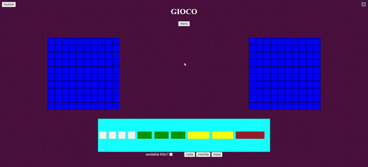
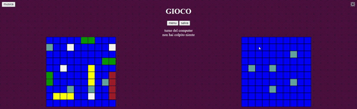
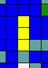

TUTORIAL
PREPARAZIONE
Per iniziare a giocare, piazzare le proprie navi sulla griglia a sinistra:
Per ruotare le navi, è necessario premere il tasto "ruota".
Non è possibile piazzare le navi una affianco all'altra, neanche diagonalmente.
È possibile piazzare le navi casualmente premendo il tasto "mischia".
Una volta piazzate le navi, è possibile premere "inizia" per far iniziare la partita.

PARTITA
L'obbiettivo del gioco è distruggere tutte le navi del nemico.
Per farlo, è necessario cliccare con il tasto sinistro la cella della griglia nemica che si vuole attaccare.
Se diventa turchese, hai mancato :(. Se diventa rossa, ha colpito la nave nemica!
Una volta distrutta completamente una nave, verrà riprodotto un suono diverso e verrà comunicato al centro dello schermo.

Ogni turno è possibile attaccare una volta, dopo la quale attaccherà a sua volta il computer.
Quest'ultimo colpisce celle casuali finchè non prendere una nave, per poi bersagliare le celle circostanti fino a che non avrà avvondato la nave per intero.

La modalità blitz permette ad entrambi i giocatori di continuare a colpire a meno che non manchino.
È possibile salvare la partita corrente premendo il tasto "salva". Tornare al menù con l'apposito tasto salva automaticamente la partita.
IMPOSTAZIONI
Nelle impostazioni è possibile regolare il proprio volume e il colore delle proprie navi. Queste impostazioni vengono salvate anche per successivi accessi al sito.
Il menù impostazioni è anche accessibile durante la partita attraverso l'ingranaggio in alto a destra,che può essere ripresa una volta modificate le impostazioni premendo il tasto "continua partita".
STATISTICHE
Il menù statistiche mostra alcune statistiche di gioco, salvate solo alla fine di una partita.